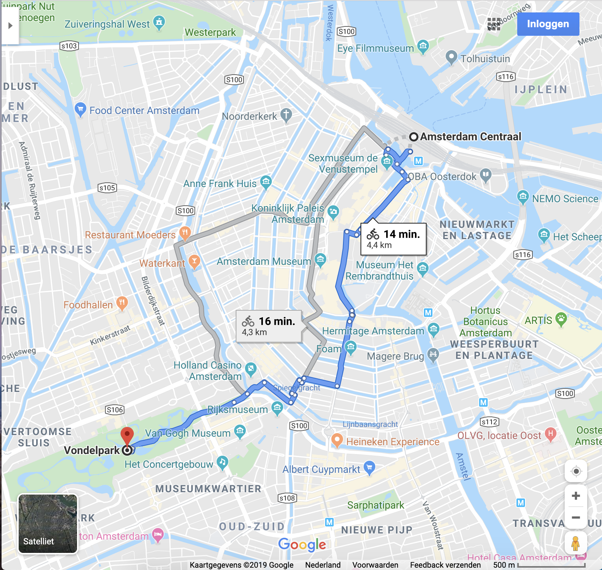

Amsterdam's most famous park is located near Leidseplein. Many people view the park as the communal garden of Amsterdam. You can rent inline skates to explore the park or take roller-skating lessons first. Many cyclist use the park as a shortcut trought the city, so be careful where you walk, skate or cycle.
